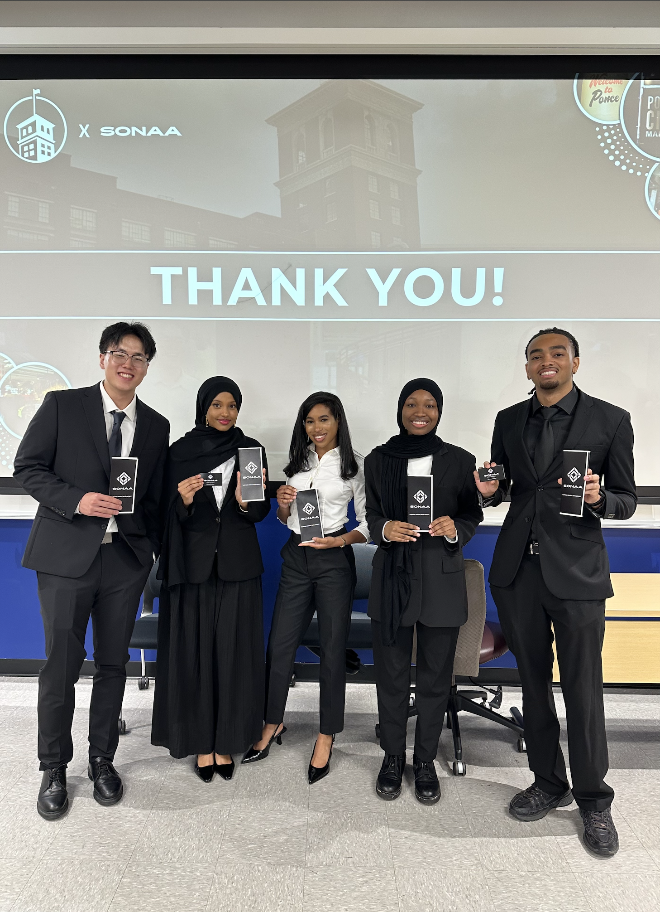

Hello! I'm
Nathan M Shin
Data/AI Analyst | Student at Georgia State University
Hello! I'm
Data/AI Analyst | Student at Georgia State University
I'm Nathan, a Computer Information Systems student at Georgia State University's J. Mack Robinson College of Business, specializing in Data and AI Analytics.
My main focus is Python, with experience in SQL and Excel, and I enjoy using problem-solving and creativity to turn clear goals into necessary solutions.
As the son of a pastor who has lived in over five countries and states, I've learned to value adaptability, openness, and embracing change. I carry these values into how I learn, work, and live today.
I enjoy collaboration and strive to create a healthy, encouraging environment where everyone can contribute and succeed. Outside of technology, I enjoy creating and playing music with others and exploring creative work through drawing, video editing, and design.
With a 4.03 GPA across my Robinson College of Business coursework, I'm driven to keep learning, create meaningful work, and grow alongside the people I work with.
Aug 2025 - Dec 2025 · 5 mos
Suwanee, Georgia, United States · On-site
Customer Service, Dining Etiquette, Table Pacing
Sep 2022 - Oct 2024 · 2 yrs 2 mos
Duluth, Georgia, United States · On-site
Education
Leadership, Team Management, Teaching/Skill Development, Event Planning, Public Speaking
Jan 2022 - Apr 2025 · 3 yrs 4 mos
Suwanee, Georgia, United States · On-site
Restaurant Management, Employee Training, POS Systems
Jan 2020 - Feb 2021 · 1 yr 2 mos
Suwanee, Georgia, United States · On-site
Plating, Pizza, Frying

Led a consulting analysis (SONAA Consulting Group) for Jamestown L.P., evaluating Ponce City Market's marketing strategy through a SWOT analysis and delivering targeted recommendations to boost repeat visits, customer loyalty, and brand awareness.
Focused on leadership, presentation flow, audience engagement, and video production